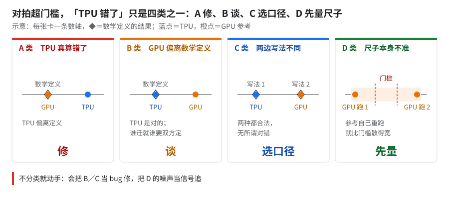
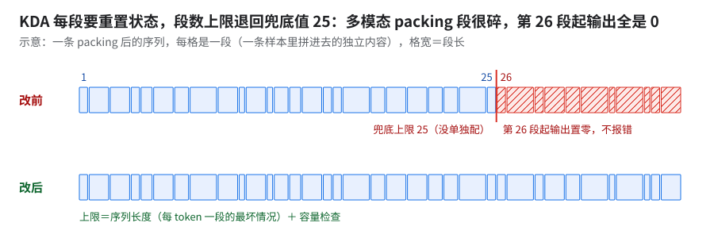
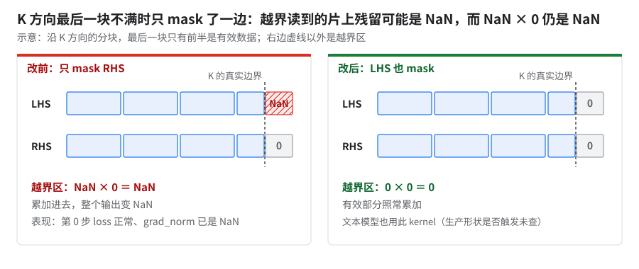
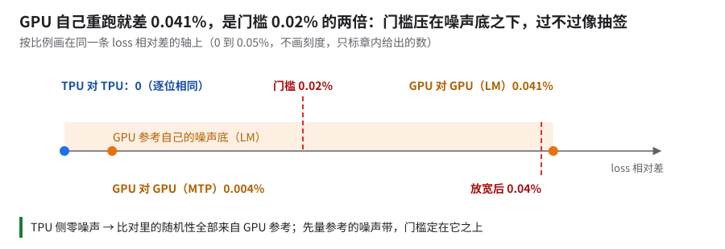

12 · 多模态版与精度对拍
这章解决什么：大号模型多模态版＝视觉编码器（ViT）＋ 大号模型主干，两段一起训。同一个模型加上看图，要在 1 片和 10+ 片上都跑得比对标 GPU 快，同时 loss 和 GPU 参考对得上。直觉上两件事都该是「把文本版的优化搬过来」，实际 1 片靠计算优化、10+ 片靠修数据读取，而对拍对不上的原因有一半不在 TPU。
ℹ️本章的步时指数用自己的底多模态版步时指数＝步时 ÷ 多模态版单片 BF16 JIT 未优化基线（中位）× 100（越小越快；下文简称「多模态底」）。这个底和大号纯文本模型的底（README）不是同一个，两套指数不能互比；和纯文本大号模型比时只给相对百分比。 门槛和与门槛比的实测值原样写百分数（0.02% / 0.04% / 0.05% / 0.15% / 0.1% 等）；§5.3 的 256K 消融表按万分之一写。
- 速度：8K 序列下，1 片和 10+ 片都快过对标 GPU 的目标线；长序列 256K 过了目标线，但没追上对标 GPU。
- 1 片指数 100 → 53（前段中位数，末段均值 57，口径见 §1）靠计算优化；10+ 片 161 → 56 主要靠修数据读取，计算代码零改动；161 本身是冷启动区的短跑，不是稳态。
- 精度对拍没签收：「一直对不上」是四类东西叠在一起（§5、§6）。TPU 真算错的已修；剩下有 GPU 偏离数学定义的、两边写法不同的，还有尺子本身不准的——GPU 自己重跑的差（0.041%）是门槛（0.02%）的两倍。
- 快和准没有交集：目前没有一个作业同时证明了「这么快」和「精度过门禁」（§6.2）。
- 100 → 53 1 片（中位数），三次独立运行（约 1.9×）
- 161 → 56 10+ 片（中位数），计算代码零改动
- 约 178 → 56 同一份代码，前段对稳态
- 几十秒 ／ 约 1 µs 一份 profile 里
jit__pad的总时长 ／ 真正的拷贝 - 约 10% 双 SparseCore 做 reduce-scatter，一对 nightly 的中位数差（有混杂项）
- 0.041% vs 0.02% GPU 同配置重跑的 loss 差 vs 对拍门槛
- 4 类 对拍偏差：TPU 错／GPU 错／口径不同／尺子不准
- 与片数成反比 作业 MTBF：N 片同跑，故障间隔约为单片的 1/N
1.问题：同一个作业，换个统计量差 8%——先统一口径
现象：1 片 FP8 nightly，前段 90 步中位数指数 53；末段 100 步（剔除首步、编译、预热、重启样本）均值指数 57。统计量（中位数→均值）和窗口（前段→末段）同时换了，8% 里各占多少拆不开。前段 P95 已到 70，长尾不小。
- 摘要里的 53 有两个来源：§2 阶梯的 1 片生产配方，以及含数值修复的 nightly 前段中位数，两者取整后相同。
| 规模 | 指数 | 口径 | 对标 GPU |
|---|---|---|---|
| 1 片 8K FP8 | 53 | 前段中位数 | 快过 |
| 1 片 8K FP8 | 57 | 末段均值 | 快过，余量小很多 |
| 10+ 片 8K FP8 | 56 | 中位数，窗口未知 | 快过 |
| 1 片 256K | 不给（会带出对标线） | 10 步末 3 步均值 | 过目标线，没追上 |
- 每个步时都要带齐五样：精度 × 执行方式（JIT／AOT）× checkpoint／配方 × 统计量（均值／中位数）× 窗口。
- 这四个数口径各不相同，不能串成一条「下降线」：合成数据 smoke 93、未优化基线 100、FP8 53、新配方 nightly 53。
- 换配方本身就让 BF16 JIT 快约 15%——「优化了多少」先问分母是哪个配方。
- 1 片和 10+ 片比的是弱扩展：每 device 工作量相同，每步时间不会变小，看的是能否保持。
⚠️10+ 片没有「57」这个数口径：1 片 53、10+ 片 56，均为中位数；57 是 1 片末段均值，不与 10+ 片比。
2.问题：1 片怎么从 100 降到 53——靠计算
测法：三级阶梯是三次独立运行：同 checkpoint、同步数窗口，代码各不相同，没做同配置 A/B。
| 配置 | 均值 | 中位数 |
|---|---|---|
| BF16 JIT，什么优化都不开 | 100 | 100 |
| BF16 AOT + HLO 通信重排 + 双 SC + 视觉行均衡 + ViT 跳 padding | 62 | 62 |
| 再加 FP8 + 实验性的计算细化开关 + 重抓的 cost profile + 优化器卸 host | 53 | 53 |
最大一刀（指数 100 → 62，快约 40%）装了这几件（只有累计差，拆不成单项）：
- CPU 交叉 AOT（CPU 机器上提前编好、TPU 上直接加载）：JIT 编的也是整个 train step，AOT 本身不带来额外的「全图视野」。收益来自只在 AOT 路径上开的东西（HLO 通信重排、AOT 专用 XLA flag、cost profile；CI 的 JIT 校验模式强制关 HLO 通信重排，09、06「JIT 还是 AOT」），以及能离线反复编、反复调。
- HLO 通信重排：在编好的图上做手术——collective placement、两阶段／融合 reduce-scatter（02）。
- 双 SparseCore 做 reduce-scatter：SparseCore（SC）是 TensorCore 旁边做稀疏 / 搬运的小核，每个 device 两颗（每芯片 4 颗，TPU7x），可以承接 collective。原先 RS 只用其中一颗，现在两颗一起上。
- 视觉行负载均衡：拉平各 device 的视觉 token 数，图片多的样本不再堆在一个 device 上；生产默认开，需配套两处 bug 修复才稳定。
- ViT 跳过 padding attention：不再对补齐位置做 attention，生产配置里默认开。
- 数据路径换区域 + chunk cache：光换区域几乎没用（BF16 JIT 差不到 1%）。
能近似拆出的两笔 [推断]：
- 双 SC 快约 10%（中位数）：一对 nightly，cost profile、checkpoint、配方、卸载、FP8 全相同。
- 均值差更大，混进了数据长尾，所以用中位数。
- 混杂项：两次之间还有别的改动（如 §4 的 tgmm 循环改写）。
- 生产默认双 SC。
- FP8 这一级快约 15%：但同时变了四样（精度、计算细化开关、cost profile、卸载）。另一对同源代码的 FP8 对 BF16 比较同样不是单变量。
ℹ️别的模型上唯一干净的单项：ViT 跳 padding微型多模态版 256K 长序列上：每步快约 26 倍。长序列补齐位置占比极高，attention 又是平方复杂度，收益被放大。大号模型多模态版 8K 上没单测。
坑：再往上叠 FP8 配方没有再变快。在此基础上再加首末层 BF16、per-group 量化、absmax QAG（04），中位数差不到 1%。
2.1 ViT kernel：单独拿出来做的几刀
ViT 固定 full remat，attention 走 Splash。下面的数都是单 device 只量 ViT 前向＋反向（个别注明含 Muon），多数是单独验证的数，不等于已进 1 片生产配方。
① dQ 三路累加：省显存的那一刀

三路累加是 Tokamax 已有的实现。
- 收益：4 芯 A/B 上 HBM 峰值 约 −15%；小号模型多模态版完整一步的 HBM 峰值 约 −40%。
- 坑：按 query 的 dtype（BF16）累加会改舍入：独立 attention 的 dQ 相对 L2 差 0.23%，训 3 步最后一步 loss 相对变化约 −2%。换成 FP32 部分和后输出和梯度相对 L2 为 0，ViT 前向＋反向快不到 1%，profile 窗口峰值约 −25%；这一版未进生产，还要在大规模上集成验证。
- 把反向 block 放大的方案撞 VMEM（TensorCore 的片上向量存储）上限，编不过。
② 一组 kernel 改法：快约 60%，但精度没过门槛
| 改法 | 原理 | 单项效果 |
|---|---|---|
| 跳不相交 tile、同段 tile 省 mask | packing 后一条序列拼了多张图、图间不互看。按运行时 segment ID，tile 两边属于不同图就整块跳过；同一张图内的 tile 不算 mask | 没单测 |
| segment 布局相同时把 batch 并进 head | 各样本分段一样时 batch 维和 head 维合成一维，一次 kernel 调用处理更多 head [推断：减少 grid 开销] | 没单测 |
| head 维不是 128 倍数时 pad 到 128 | 前向 PV 和反向 dQ 先把 head 维补零到 128 再进 MXU（TensorCore 里做矩阵乘的单元），算完切回 | 没拆出单项；同批改动 ViT 步时差不到 1%，精度门槛通过 |
| RoPE 左右两半分别算 | 原写法先拼出「转半圈」的整 head 中间量（slice + 取负），改成两半各算再 concat；FP32 算术和 BF16 舍入点不动 | 含 Muon 整步快 1–2%，slice／取负耗时清零，编译期临时 buffer 少 1–2%；输出逐元素一致；验证过，未进生产 |
| 反向重算走自定义 VJP、固定 shift 的 log2 softmax（带数值守卫和在线 softmax 回退）、重扫 tiling | — | 重扫 tiling 单项快 1–2% |
- 合计：ViT 前向＋反向中位数 快约 60%。
- 坑 1：未进生产。对默认 BF16 输出误差略超 1%，没过 1% 门槛，梯度误差也略升，不能叫数值无损，所以没采用；计时基于旧代码、未重测。
- 坑 2：只升依赖不改 preset 反而慢。Tokamax 升级后旧 preset 步时 约 +15%；前向 tile 对齐、dQ 计算顺序改回来各收回一截；再按序列长度重扫 Splash block 选新 preset，比旧 preset 约 −10%（含不含 Muon 都是）。
- 坑 3：精度门槛本身没过。FP32 独立精度检查（门槛 2%）优化版和基线都不过，只「不比基线差」的子检查过了；「只在部分 tile 上加 mask」的开关可能跨段泄漏，没修。
✅升 kernel 依赖时升级会改默认 tile 和计算顺序：依赖和 preset 一起扫；每一刀都过一遍输出和梯度的相对 L2，门槛先写死再动手。
3.问题：10+ 片为什么「慢三倍」——主要是在等数据
前置：§2 的 1 片配方作为对照。收益：指数 161 → 56（中位数），计算代码零改动。
3.1 短跑数不能判瓶颈
- (a) 161 本身是虚高：三个配置（指数 161／172／177，后两个见 §3.4）每个只跑 28–60 步，全在冷启动区，数据缓存空、每步从远端现拉。
- (b) 修复让作业能跑过冷启动、不被限流卡住。
- 旧镜像版本无稳态数据，(a)(b) 各占多少分不开。
证据：怎么证明是「在等」，不是「算得慢」
- 同一份代码，前后差 3 倍。 生产作业恢复后前 37 步指数约 178；跑到 5,000 多步中位数 56。
- [推算] 从恢复到进入稳态之间这一整段平均指数约 85，比稳态 56 慢约五成；慢段在哪一步结束定位不了。
- 驱逐不计入 restart 数，restart＝0 不能证明没中断。
- 单份 profile 里
jit__pad几十秒，几乎全在等别的 host 到齐（下图）。根因没最终确认（只采了 1 台 host）。 - 修的全是数据侧：模型／kernel／HLO 代码未改。

⚠️重叠阶段的耗时不是瓶颈数据端 planner（跑在 host CPU 上、提前为后续各步规划要读哪些数据 chunk 的组件）在 CPU 实验里单步耗时约为稳态训练步的两倍，容易被当成「数据端每步就要这么久」。但 planner 提前规划、和训练重叠，测的又正是跑到指数 56 的那份代码——解释不了开头的 178，只说明数据端有请求放大、CPU 偏重。
✅判据弱扩展下步时涨了，先看 data wait 和 barrier，再看 DCN。报稳态至少跑过冷启动，并用同一份代码的前后段做差分。
3.2 数据侧修了什么
| 修复 | 原理 |
|---|---|
| 去掉消费端 SHA256 扫描 | 每个读进程都先把整个文件哈希一遍，CPU 和带宽翻倍，几百台 host 一起做就是请求放大。校验应在生产端做一次 |
| 每个源只 stat 一次 | GCSFuse 上每次 stat 是一次元数据请求，元数据又没开缓存；源数 × host 数 × 重复次数，很快撞限流（429） |
| mmap Arrow 源 | 不把整个文件读进内存再拷贝，只按需把用到的页换进来 |
| 样本／pack 内复用图片字节 | 同一张图在一个样本或一个 pack 里被引用多次时只读一次 |
| chunk cache 回收不阻塞恢复 | cache 回收若超过重启超时（1800 s），作业会耗尽重启次数停下。清理不能在恢复关键路径上 |
| TensorStore 默认走 gRPC | 新桶没开 gRPC，读请求退回 HTTP/1.1 走单桶限额 → 429。此时扩配额也没用——瓶颈在没缓存的元数据请求 |
| 扩配额 + GCSFuse 缓存／预取参数 | 配合上面两条才生效 |
⚠️两个看着能救、其实不行的
- gcsfuse
max-retry-attempts:10：HTTP 下这个参数无效；gRPC 下它把限流变成读报错。不采用。- planner 方案 V2（想降 CPU）：CPU 实验比 V1 还慢约 20%。
- 新桶第一件事查 gRPC 开没开；429 按配额名分类监控。
- 数据出错要 fail fast：一个 chunk 遇到 401 一直重试，单步拖到稳态步时的约 30 倍，根因没定。
- checkpoint 相关修复（等旧 pod 退干净再重启、并行保存等）只影响保存和恢复，不进稳态步时。
3.3 放大规模时 preset 漂移
10+ 片 preset 和 1 片生产配方不是一回事：
| 项 | 1 片生产 | 10+ 片 preset |
|---|---|---|
| RS 用几颗 SparseCore | 双 SC | 强制单 SC（没有注明理由） |
| 视觉 micro batch（mmbs） | 2 | 1 |
| 前向 DCN hoisting（把跨片通信提前发出、和计算重叠） | — | 不开 |
| cost profile | 1 片自己的 | 拿 1 片的 profile 给 10+ 片编译定价 |
| 计算细化开关（§2） | 开 | 关 |
| dcn 相关 flag | — | 写死一组 combiner／split 阈值 |
- 文本大号模型在 10+ 片上换自己的 profile 就省了一截（03 §9「多片自己的 cost profile」），多模态版这一步还没做。
- 10+ 片 preset 还是单 SC，所以还没吃到 1 片双 SC 那约 10%。
⚠️这笔账不平，别据此预言1 片双 SC 省约 10%，10+ 片单 SC 却只比 1 片慢约 6%（中位数对中位数；1 片末段均值 57 口径不同，不拿来和 10+ 片比，见 §1），可能是窗口不同、底座多带的改动、mmbs 差异。没有 10+ 片 profile 拆不清，不能说「10+ 片开双 SC 后会比 1 片还快」。
✅「配方相同」要拿 flag 逐条对上规模前把两边最终生效的 flag 打印出来 diff。大规模 preset 与小规模配置可能不一致，写死的值未必有理由，逐项核（2 片 512 芯片单 SC 差约 10 MB 装不下，06）。
3.4 试过但没成的
| 尝试 | 想干什么 | 结果 |
|---|---|---|
| 前向 DCN all-reduce hoisting（多片 BF16） | 把跨机通信提前、和计算重叠 | DCN 重叠部分降到约三分之一，但模型估计（非实测）端到端反而略慢，不到 1%；生产代码里有，多模态版不开 |
| 换 AOT 产物（pickle）+ 另一份镜像试 hoisting（10+ 片） | 同上 | 指数 172／177，比 161 还慢；pickle 和镜像同时换，且 hoisting 只对文本 case 开，不能当 A/B |
| DCN AR combiner flag | 合并跨机 all-reduce | 未测出结果；同组 flag 其实已写死在 10+ 片 preset 里 |
| BF16 线也开 HLO 通信重排 | 让 BF16 吃 HLO 通信重排 | 开比关快约 4%；另一组配置同样更快，但分母不明；只看 3 步，未复测，只能定性引用 |
4.问题：启动太慢——先数编译了几次
多模态版每次启动编译好几遍：train step 重复编译、首批数据没预取、tgmm lowering 慢。
JAX_EXPLAIN_CACHE_MISSES=1：每次 cache miss 打印原因，直接数出编了几次、为什么重编。第 3 次编译只在开 spike monitor（训练中盯 loss 尖峰的监测）时出现。- 收益：2 片 JIT 启动约 42 分钟；1 片上几项合计后约 5 分钟。两个数不是同配置（片数不同），只说明量级，不能直接相除当收益。这组改动未进生产。
- 现象：Pallas 内核里的 Python
for在 trace 时完全展开，kernel 体里静态写着「专家数 × K 块数 × N/128」条 DMA 指令。 - 改法：换成
fori_loop，循环留在 kernel 里由硬件执行。 - 收益：train step lowering 快约 100 倍；CPU AOT 约 66 → 38 分钟。单 kernel lowering 预计快几个数量级 [推断：未实测]（同一坑见 05）。
- 前提：只拖编译，运行时 DMA 不变，对步时没影响；专家越多展开越大。
5.精度对拍：四类偏差，先分清是谁的问题
比的是什么：同一 checkpoint 起步，TPU 和 GPU 各训 N 步（8K 是 1000 步），每步算 (TPU − GPU) ÷ TPU，取 N 步带符号平均的绝对值和门槛比。分母取 TPU 是这套对拍脚本的定义；两边 loss 只差千分之几，换 GPU 当分母只差高阶小量，不改变过不过 [推断]。分七条线各比：LM、MTP（多 token 预测头的 loss）、纯文本、通用图文、OCR、视频、图文交错——各是不同数据子集上的 loss，不是下游评测分。

每张卡看 ◆（数学定义）落在谁身上。现状：A 主体已修完、生产版不含已知回归；B 未定；C 部分进了生产，几项叠加各线朝不同方向偏；D 没做，最大缺口。
⚠️对拍工具自己也会静默失效逐层前向 dump／逐 token loss dump 有三个坑（无条件清缓存、初始化晚于编译导致静默不 dump、callback 缺
ordered=True），详见 13「量法错、秤不准」M14。
5.1 A 类：TPU 真算错了
| bug | 机制 | 修复 |
|---|---|---|
| KDA 超过 25 个 segment 输出置零 | KDA（模型里的线性注意力，05）按 delta-rule 循环、每段重置状态；段数上限没单独配，退回兜底值 25，第 26 段起置零（下图） | 上限设成序列长度（8K 配 8192、256K 配 262144）并加容量检查 |
| grouped matmul 尾 tile 读到 VMEM 残留 → NaN | size_k 不整除 tile_k 时只 mask 了 RHS，LHS 越界读到片上旧值（下图）。表现：第 0 步 loss 正常、grad_norm 已是 NaN | LHS 也 mask。文本模型同样用这个 kernel；缩小版对拍形状会触发 K 不满，生产形状会不会触发没查 |
| SwiGLU clip 边界只回传一半梯度 | jnp.clip 在恰好等于边界的点回传 1/2 梯度，参考实现（Megatron）回传全部；clip 作用的层范围也配错（比参考少一层，shared expert 漏了） |
改成全回传、对齐层范围 |
| spike monitor 带出的 Muon 舍入变化 | spike monitor 的实现改了 BF16 Newton-Schulz 迭代的中间舍入，spike 关着也走；小号模型上 +0.0216%，超过 0.02% 门槛 | 生产版 spike monitor 不改 Muon 舍入 |


看虚线右边：RHS 的 0 救不了 LHS 的 NaN。
两条看似 A 类、核实后不是：
- Muon 把视觉的 patch／pos embedding 分错组：生产配置里的分组是对的；开发代码里的错配未进生产。
- ViT 位置插值触发融合异常（整塔 vs 逐层在 FP32 下差约 50%，加
optimization_barrier后 3.75e-6）：barrier 只单独试过，生产代码里有没有没查。
⚠️这批修复同时生效、没有逐项消融A 类修复各自贡献多少拆不出，几项叠加还可能互相抵消或放大——对齐修复要一项一项进、一项一项测。
5.2 B 类：GPU 偏离了数学定义（TF32）
- 现象：GPU 参考在视频 RoPE 的角度计算里用了 TF32。NGC 容器默认
TORCH_ALLOW_TF32_CUBLAS_OVERRIDE=1，RoPE 里的 FP32 bmm 按 10-bit 尾数舍入。 - 误差大小：多模态 packing 的实际位置上，0–1K 最大 0.16 rad，1–2K 达 0.23 rad；纯文本 RoPE 走
torch.outer，不受影响。 - 怎么证明的：两个操作数 RNE（就近舍入到偶数） 到 TF32，0..8191 所有位置逐位 100% 复现 GPU 结果；截断只复现约 35%，就近远离零约 90%。TPU 是对的。
- 影响多大：256K 上单开 TF32 模拟 825 步，LM −0.0006%、MTP +0.0405%，没单独拉进门槛——只解释一部分差距；8K 还没结果。
- 怎么修：TPU 模拟 TF32 还是 GPU 关 TF32，要训练方和参考方一起定口径，不是 TPU 侧能单方面修的 bug。
✅怀疑参考侧精度时先查参考环境的默认精度开关（TF32、
allow_tf32、matmul.precision），再把 TPU 的 FP32 结果按某种舍入降到低精度——能逐位复现参考，就是参考偏了。
5.3 C 类：两边写法不同（要选口径，都不算错）
| 项 | 差异 |
|---|---|
| router z-loss 在 CP（序列切给多芯片）下怎么归一化 | 已统一，只在 256K 配置里启用 |
| router 分数打平时选哪个专家 | 未进生产配置：会改变默认数值行为；256K 单开消融基本无效（见下表） |
MLA wq 的权重梯度（dW）精度 |
GPU 用 FP32，TPU 用 BF16；未定 |
| KDA 内部几处 cast／clamp、Muon 更新写法 | 只登记差异，没测影响 |
256K 消融（LM／MTP 相对差，单位：万分之一）：
| 组 | LM | MTP |
|---|---|---|
| 基线 | +132 | +41 |
| 只开打平规则 | +133 | +40 |
| 完整修复 + 打平规则 | −10 | −11 |
| MLA FP32 dW | +24 | +6 |
- 单开打平规则基本无效。
- 这些「对齐」各自朝不同方向推，盲目全对齐没有用：几项叠在另一条基线上，同一个 run 里 LM +0.41%、纯文本 +0.65%、视频 +0.52%，而通用图文 −0.11%、OCR 偏低 1–2%（这一串里偏差最大）。
- D 类没标定前，小于 GPU 自身噪声的单项变化也不一定是真变差。
文本模型主干上的三处对齐（已进生产，可直接照抄）：
- MLA softmax scale 乘在哪：
- 改法：scale（含 YaRN 的 mscale）作为 logits scale 乘在完整的 QK logits 上，不在边界先把 query 缩一遍；Splash 关掉 base-2 指数开关，走自然指数 softmax，和 Megatron 一致。
- 原理 [推断]：数学上等价，但先缩 query 是在 BF16 的 q 上做一次乘法再进矩阵乘，舍入点和参考不同。
- 效果：和同批其它对齐（Muon Newton-Schulz 舍入、短卷积权重精度等）一起进生产后，8K 1000 步 LM loss 平均相对差 −0.0013%，单项拆不出。
- 另外，GPU cuDNN flash 路径缩了两次：MLA 边界预缩 Q 后 kernel 又缩一次（等于 scale²）；非 MLA 的 causal 分支在已按深度缩过的 query 上再乘 1/√d。TPU 三条路径都恰好缩一次；只影响 GPU，CI 覆盖不到。
activations_in_float32在 GMM 路径上不生效：- 原因 [推断]：FP32 cast 写在激活函数之外，专家走 grouped matmul 那条路时没经过它。
- 改法：cast 挪进激活函数本身（checkpoint 仍存 BF16）；路由权重
sorted_weights那次乘法恒用 FP32，保护 router 梯度精度。改后 loss 对改前差 3e-6。
- LM／MTP loss 按样本归一：
- 改法：先在每条样本内归一，再对样本等权平均（MTP 同理），对齐参考的「每样本一份 loss」。
- 效果：MTP 与参考的带符号平均差从 +0.099% 降到 +0.044%（第 0 步）；MTP 与 LM 之间的残差从 0.1% 量级压到 ±0.02 个百分点；nightly 的 MTP 容差随之收紧 10 倍。
- 坑：只在参考侧 micro batch＝1 时严格等价，大于 1 就是另一种口径；禁止和 vocab tiling＞1 同开；改的是全系模型的训练目标，不只是对拍。
FP8 那条线两边的差异（dtype、scaling 粒度、delayed 还是实时、amax 怎么跨 rank 归约、转置用缓存还是从高精度重新量化）单列在 04 §2.4；跨框架对拍的通用清单见 13「跨框架对拍清单」。
6.D 类：尺子本身不准
问题：门槛没标定之前，过不过可能只取决于拿哪个 run 当参考。
| 现象 | 数字 | 说明 |
|---|---|---|
| GPU 自己重跑就超门槛 | 同配置两个 GPU run，LM 差 0.041%、MTP 0.004%；门槛 0.02% | 同一个 TPU run 对一个 GPU run 过、对另一个不过 |
| TPU 侧零噪声 | 不同源码版本、不同机器的两次 run，1000 步所有非性能指标逐位相同 | 随机性全在 GPU 参考 |
| signed 均值靠抵消过关 | 通用图文线 signed −0.06%，MARE 0.1525% | MARE＝先取绝对值再平均。+0.2% 和 −0.2% 两步：signed 0，MARE 0.2%（下方动图） |
| 窗口长短改结论 | 同一个 run：100 步 LM −0.0003%（过）；只取前 20 步 −0.10%（不过） | 窗口越长，前段的偏差越被后段稀释 |
| LR 差 1 ULP 带出 0.03% | 延长步数改了 cosine 衰减的 horizon，某一步起 LR 差 1 ULP（浮点最后一位）；loss diff +0.032%，修后 −0.0003% | 轨迹混沌分叉，和 GPU 跑两遍的噪声同一量级 |

看门槛线落在橙带里。

看负柱翻上去后平均线的位置。
- 按 MARE 量，放宽后的门槛也不过：MARE 0.1525% > 0.15%，门禁按 signed 判，两种量法结论相反。
- 门槛在漂：对拍门槛从 0.02% 放宽到 0.04%，CI 通用图文线从 0.05% 放宽到 0.15%（OCR 线反而收紧），都没写理由、没做噪声标定。
- 持续偏差 vs 噪声 [推断，按逐步序列计算]：通用图文线同一参考下两次都为负，相邻步自相关 0.58，10 个 100 步窗口 7 个为负——更像持续负偏差；但 GPU 参考每条只有一个 run，下不了「TPU 有系统偏差」的结论。
✅怎么定对拍门槛
- 先量参考的噪声：同配置、不同种子／不同机器把 GPU 参考跑 3 次以上，量出噪声带，门槛定在它之上。
- 确认 TPU 自身可复现：同配置跑两次逐位比对；逐位相同就只标参考。
- signed 和 MARE 同时报，再报窗口长度和起止步；多个 run 比较前先确认参考是同一条。
- 分线报：各子集 loss 方向可能相反，只看总 LM 会把它们平均掉。
- 改步数／LR 调度时先对 LR 逐步 diff：1 ULP 的差就能制造门槛量级的偏差。
- 门槛改动写理由；放宽前先看是不是噪声带本来就比门槛宽。
为什么：门槛要压在「换个随机种子本身就会差多少」（噪声底）之上，否则过不过是抽签。短程走平只排除误差逐步累积，排除不了长训后期的离群值，所以闸门分三层：先量噪声底；短程看差是否在几倍噪声底内且不再扩大；长训看逐层 amax、裁剪比例和下游评测。本章门槛恰压在噪声底之下（上面噪声底图）。
把握：公开资料 · 出处：Micikevicius et al. 2022（arXiv 2209.05433，以落在不同种子的 run-to-run 波动内为准）；DeepSeek-V3 技术报告 §3.3、附录 B.1（FP8 对 BF16 相对 loss 误差低于 0.25%，称在训练随机性范围内）；Fishman et al. 2024（arXiv 2409.12517）；MXFP8 预训练研究（arXiv 2506.08027）；本书 FP8 线没有同模型的噪声底，0.041% 来自多模态版，只能当量级参考（未核），见 04 §11
6.1 还没解释的两件
- 梯度裁剪率：触发全局 norm 裁剪的步数 TPU 约 8%、GPU 约 1%。全局裁剪连带缩小主干更新，可能是漂移来源之一，原因未定。
- ViT 激活很大时 bf16 路径不一致：训练后 ViT 激活到 13,700，任意两条 bf16 路径前向差 4–6%，换真 FP32 后一致。这只证明几条 ViT 路径算的是同一个函数，没解释裁剪率为什么高。
6.2 现状
| 线 | 状态 |
|---|---|
| 8K LM／MTP | 稳定过关（约 0.01–0.017%） |
| 8K 通用图文 | −0.08% ～ +0.11%，不过 0.05% → 门槛被放宽到 0.15% |
| 256K | LM +0.006% 过，MTP −0.028% 不过；13 组消融无单项解决 |
| FP8（200 步） | 视频线 +0.38% 不过（门槛 0.1%），重跑完全相同 |
⚠️快和准没有交集
- 出指数 53 成绩的是 FP8 配置，而 FP8 的视频线不过门禁；1 片出成绩的那个作业没开 loss gate，10+ 片的开没开不知道。
- 没做过下游评测：0.1% 级的 loss 差对应多大的模型质量差，没有数据。
- 引用时：速度用 §1 WARN 的两个数（FP8），注明这两个作业没有精度门禁背书；精度单独引 8K LM／MTP 的过关区间。
7.问题：片数越多故障越密——稳定性
- N 片同跑，故障间隔约为单片 MTBF 的 1/N（MTBF＝平均多久坏一次；[推算：两个规模的推算点折成单片 MTBF 基本相同]），几十片就到半天量级。goodput（有效训练时间占比）目标是 ≥95%（01）；更大片数下「goodput 上限约 95%」只是估计，没有推导，别当算出来的数用。故障越密，恢复时间越要压。
- 旧 pod 没退干净时，调度器会放弃拓扑摆放，子 Job 散到十几到二十个 cube（4x4x4＝64 芯片的物理分块）上永远等不齐，表现为反复中断、数小时无净进度。
- CI：组合改动要合并后再跑门禁——两个各自通过的改动合起来可能挡住主线。进主线前在最新主线上重跑。
8.给下一个模型的七条
- 先确认数字是不是稳态。 10+ 片指数 161 看着像比 1 片慢三倍，实际主要是冷启动 + 数据等待（§3.1）。
- 大规模先查数据管线，再查 DCN（§3.1 TIP）。
- 计算优化在单片上做透，搬到大规模要拿 flag 逐条核 preset（§3.3）。
- 数字带口径：精度 × 执行方式 × checkpoint／配方 × 统计量 × 窗口（§1）。
- 重启前等旧 pod 退干净：没退干净时子 Job 会散到十几到二十个 cube、永远等不齐（§7，07 §6.4）。
- 精度对拍先量参考自己的噪声，signed 与 MARE、窗口长度同报（§6 TIP）。
- 对齐修复要单项进、单项测（§5.1）。